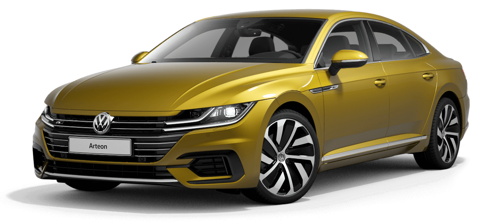

Arteon
There are sedans and there are sports cars. Since 2017, the Arteon has combined these two automotive worlds, with avant-garde design, a spacious interior and the latest assistance systems as well as interactive networking and efficient power plants. The four-door model is offered with Arteon, Elegance and R-Line trim levels. The standard version already has features such as LED headlights, Lane Assist, the Front Assist ambient monitoring system with City Emergency Braking function and the Composition Media infotainment system on board.
